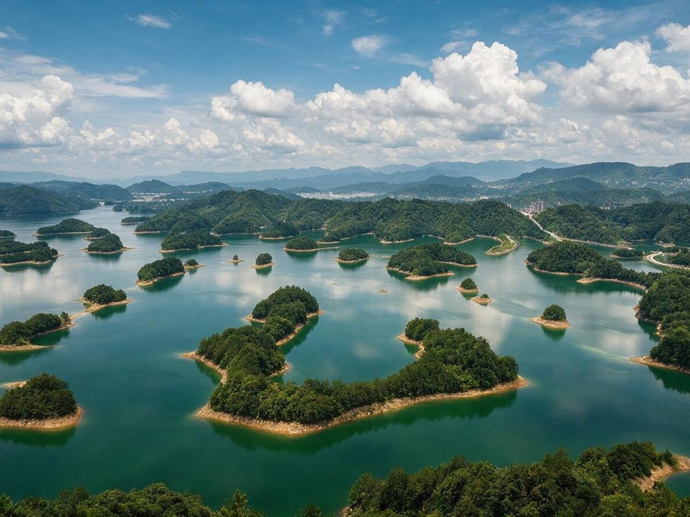
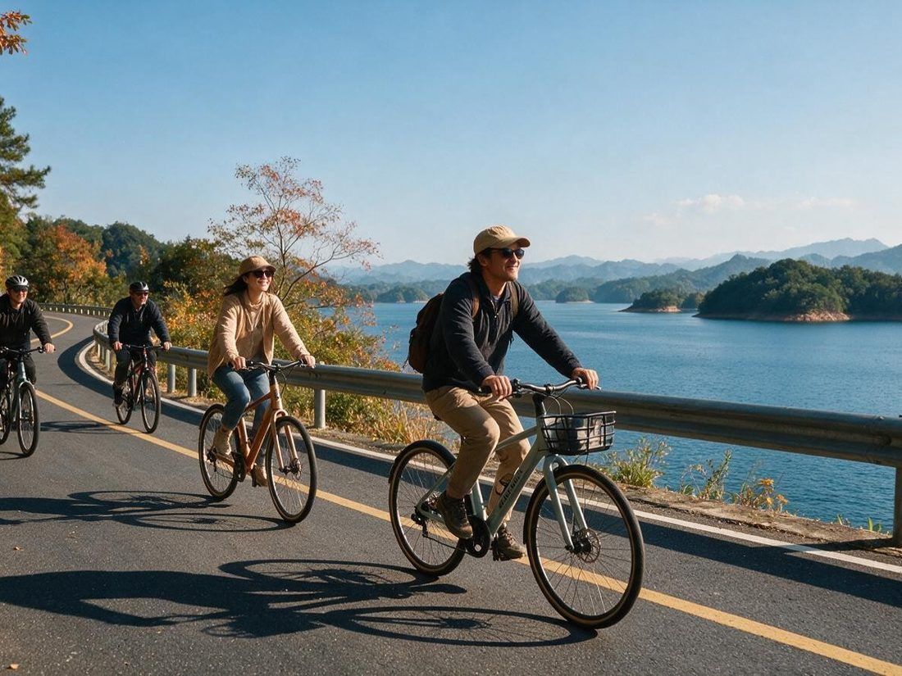
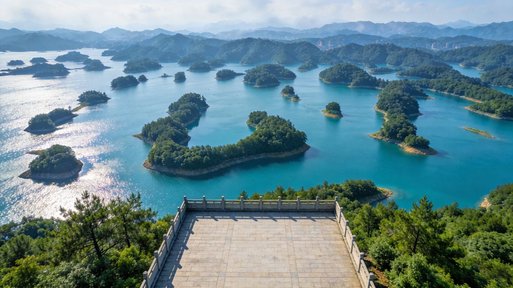
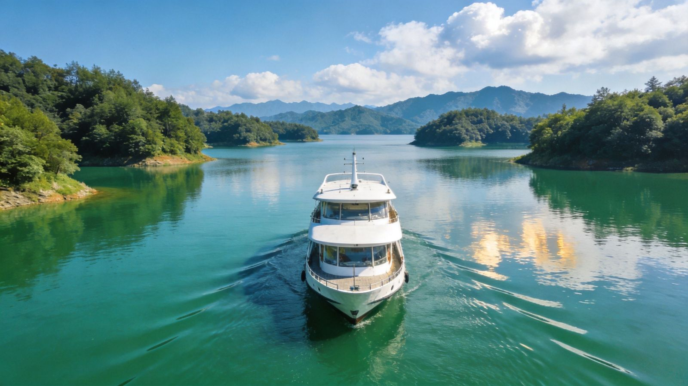
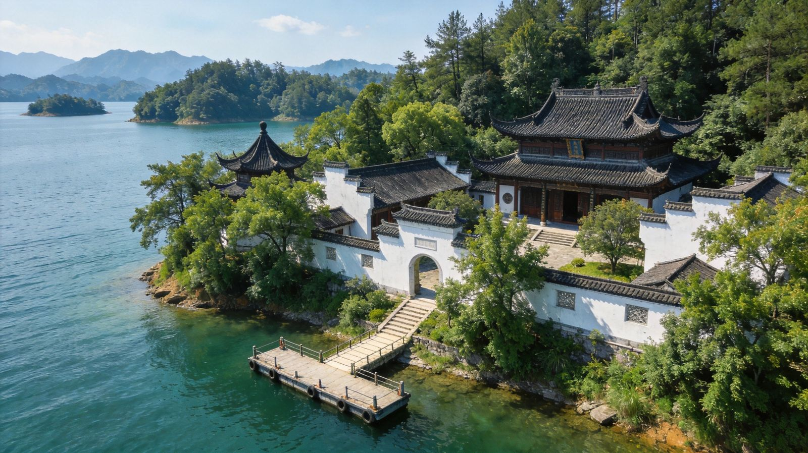
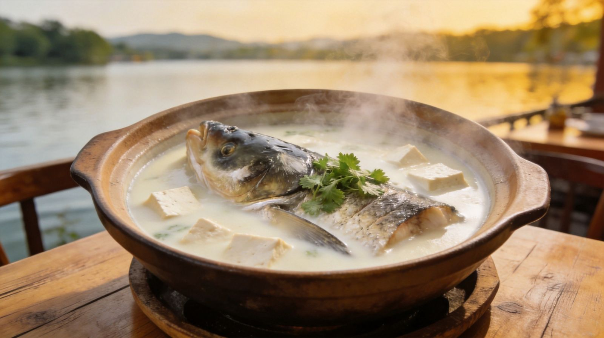

封面
总览
行前·交通·住
Day1 环湖骑行
游船登岛
人文·龙山·文渊
渔村·慢时光
美食
组合·贴士
安全
纪念

千岛湖 · 千星千岛
淳安
环湖骑行 · 游船登岛 · 湖鲜鱼宴
千岛湖
环湖骑行
游船
鱼头
人文岛屿
浙江 · 中国
A5 口袋手册
· 湖光千岛间漫游
1
/ 11
淳安
动线总览
2 天怎么玩
Route Overview
1天
上午
环湖骑行 · 梅峰观岛
沿最美环湖绿道骑行，登梅峰俯瞰千岛棋布
1天
下/晚
湖滨慢时光 · 鱼宴
湖滨散步看晚霞，尝千岛湖鱼头煲
2天
上午
中心湖区 · 游船登岛
乘船进湖区，登梅峰/龙山等 2–3 岛
2天
下午
岛屿人文 · 文渊狮城
龙山岛海瑞祠，隔湖遥望水下古城
可+1天
周边串联
桐庐富春江山水，或皖南/杭州串线
TIP
千岛湖是
饮用水源地
，碧水一流；核心玩法是
骑行＋游船登岛＋湖鲜
，节奏宜慢不赶。
2
/ 11
淳安
行前准备
怎么去 · 住哪 · 带什么
Before You Go
🚄 怎么去
高铁：千岛湖站
，杭州约 1 小时可达
自驾
环湖最自由，杭州约 2 小时
杭州汽车南站/长途班车到千岛湖镇
🏨 住哪
千岛湖镇（中心湖区）
：码头、鱼馆、夜市在旁，首推
湖边度假酒店/民宿
：一线湖景阳台，适合放空
🎒 必带
骑行
防晒霜＋遮阳帽＋水
必不可少
湖区紫外线强、早晚凉，
薄外套
带上
想骑全程提前订车；夏秋为最佳骑行季
3
/ 11
淳安
环湖骑行
Day1
环湖
环湖骑行 → 梅峰观岛 → 湖滨
RIDING LOOP
🚲
环湖绿道
精华 30–50km
⛰
梅峰
登顶观千岛
🌇
湖滨
看晚霞

环湖骑行绿道 · 湖风拂面

梅峰登顶 · 千岛棋布
🚲 怎么骑
镇上租
自行车/电驴
，沿
环湖绿道
骑行，平缓风景最好
精华段约
30–50km
，量力而行，一路湖湾、观景台不断
⛰ 梅峰观岛
游船码头乘船或自驾到
梅峰岛
，
缆车或徒步
登顶
观景台俯瞰为数众多的翠岛
散布碧湖
，是千岛湖第一眼
TIP
早出发
凉爽少晒；骑行备好水与防晒，下坡控速。
4
/ 11
淳安
中心湖区
Day2
游船
中心湖区码头 → 游船登岛 → 湖上时光
ISLAND CRUISE

中心湖区 · 游船穿行群岛
碧水登岛
🛥 玩法
中心湖区码头乘
游船/游艇
进湖，航程约半小时到一小时
按航线
登 2–3 岛
：梅峰观景、龙山人文、月光岛等，贵精不贵多
船票＋岛游约
150–220 元/人
（以当日公示为准）
全程约
4–6 小时
，上午班次景色和光线更好
TIP
上岛带好水与防晒；
记好回船时间
，别让全船等。
5
/ 11
淳安
岛屿人文
人文
岛屿
龙山岛海瑞祠 → 隔湖遥望水下古城
CULTURE

龙山岛 · 岛上人文名园
海瑞祠
🏛 龙山岛
岛上
海瑞祠
纪念明代清官海瑞，亭台楼阁、清廉文化
临湖石阶码头与园林，登高可望湖光与群岛
🏘 文渊狮城 · 水下古城
老淳安县城曾
整城沉入湖底
，岸上复原「文渊狮城」
徽派街巷、民俗与非遗，可走近那段水底记忆
TIP
这站是
人文体验型
，时间紧可精简；喜欢古城民俗尤其值得留步。
6
/ 11
淳安
湖滨慢时光
慢
时光
渔村湖滨 → 看晚霞 → 临湖而憩
SLOW LAKE
渔村湖滨 · 黄昏金湖
慢度假
🌅 玩法
傍晚
沿湖滨步道散步，看晚霞染金湖面与渔村灯火
住
湖边民宿
，清晨湖边漫步、听鸟，才是千岛湖的正确打开
骑客小镇、湖畔咖啡馆，坐下来看湖是最佳项目
TIP
淳安的慢不在跑景点，
在湖畔喝茶看湖、等一场日落
。
7
/ 11
淳安
湖鲜鱼宴
千岛湖味道
Local Food

千岛湖鱼头汤 · 奶白浓鲜
现杀现煲
🐟
千岛湖鱼头
白汤清炖或剁椒，浓白如奶、鲜而不腥
🦐
野生湖虾
白灼或油焖，弹嫩清甜
🍡
手打鱼丸
现打鱼丸配汤，湖鲜一绝
🍗
山笋土鸡
湖区山林土产，煨汤最鲜
🥬
湖滨时蔬
农家菜园现摘，清爽解腻
TIP
到本地人排队的
湖鲜馆
，现杀现做的鱼头王最值得一试。
8
/ 11
淳安
组合 · 贴士
怎么串成一条线
Route & Tips
千岛湖走法（元/人）：
🗓 一日精华
环湖骑行＋梅峰观岛＋湖滨晚霞
约 200–400
🗓 两日度假
骑行＋游船登岛＋文渊＋鱼宴＋湖边住
约 600–1000
🚄 交通
高铁千岛湖站约 1h；自驾环湖最自由
杭州约 1–2h
🧭 串线建议
杭州→千岛湖→黄山，或连皖南古村/桐庐山水
浙皖一线
TIP
千岛湖适合
慢节奏
，两日正合适；骑行放在最清爽的清晨。
9
/ 11
淳安
安全提示
湖岛悠游 · 安心慢行
Stay Safe
⛵
水上安全
乘船务必穿救生衣；湖区深水，勿野泳
🚲
骑行安全
环湖道遇坡道、下坡与车流注意控速靠右
🌞
防晒防暑
湖区紫外线强，防晒霜＋遮阳＋充足饮水
🦟
防蚊虫
湖滨、山林蚊虫多，驱蚊液带上
🥗
饮食卫生
湖鲜选正规餐馆现做，肠胃弱者适度
水上安全第一，愿你在碧水青山间玩得安心 🚲
10
/ 11
淳安
纪念
🌊
🌄🚲🐟
千岛湖 · 湖光千岛
愿你在碧水青山间慢下来
一路骑行 · 一帆风顺 💙
MADE WITH CARE BY WORLDSTIP
11
/ 11
Insta360
记录美好
记录美好生活
相机指南 · CAMERA GUIDE